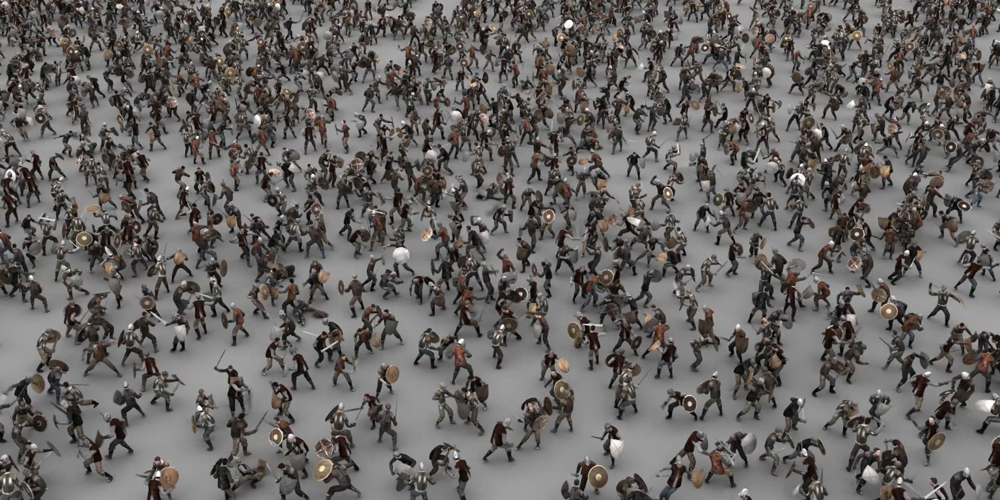
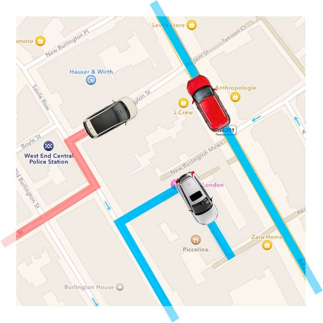

1.1. a Brief History of Multiagent Systems¶
Multiagent Systems are a part of Computer Science, at the frontier between software engineering, distributed computing and artificial intelligence. They appeared in the 1990s when the research and engineering questions of these three subfields came to similar solutions to deal with different problems. Understanding multiagent programming and multiagent simulation requires to have all three aspects of MAS in mind.
For each field, we give a brief history of the domain to show how MAS apperead as a breakthrough in this research area. We identify the key characteristics of MAS that issued from this field. The fourth section concludes on the definition of agents. The last section gives an overview of MAS concrete applications.
1. MAS as seen by a software engineer¶
Writing software using different programming languages, design principles or systematic validation models has been a research question in Computer Science since the first digital computers appeared in the 50s. Questions such as how to maximise the speed, the reusability, the readability, the security of code is at the core of software engineering. It has a long history of breakthroughs such as the abstraction of functions (reusable and parameterised pieces of code), the modularity (separation and encapsulation of pieces of code) or object-oriented programming. All these inventions aim at helping programmers deal with the ever-increasing complexity of software systems.
In the 90s, software engineering research moved from the notion of objects to the notion of service. The core idea is that a piece of code, possibly a thread, should be provided with some machine-understandable interface that could allow other code to use it without a priori knowledge of its operational content. Such interface defines which method to call first, what are the expected properties of the outputs given the inputs for each method, etc. Software engineers rely on interaction protocols to define how the different services should be assembled, how the information has to be exchanged between them, so as to produce some expected result. Multiagent systems were proposed in this context as a series of platforms to support the development of such service-oriented software, with coordination entities capable to interpreting protocols.
As a consequence, for a software engineer’s point of view, what matters in multiagent systems is the possibility to assemble separate components or threads by designing well-formed interaction protocols. These protocols ensure that the right methods are called, that the answer are of correct type wrt the expectation of the calling method, etc. It is also important for software engineers to have a specific programming language to define the behaviour of the agents. As we shall see in sessions 4 to 7 of this course, logic-based programming and its relation to AI played a key role in this regards.
2. MAS as seen by a distributed systems engineer¶
Distributed computing and more generally distributed systems originally developed in the 60s but they really became popular in the 70s with the development of Arpanet (the predecessor of Internet) and distributed architectures such as client-server models in the 80s. The core idea behind distributed systems is that different processes are located on different physical systems (all connected by some network infrastructure) and interact with each other using some message passing mechanism. Actually, the agents (or processes) can run on one single computer. What matters is that they have independent memory spaces and runtimes. As a consequence, they cannot rely on synchronous interactions as is usually done with classical function calls. Multiagent systems were designed in this context to support such asynchronous runtimes.
Let us illustrate this notion with a concrete example. In the following code, the calling function waits for the compute function to end before the code continues. When reaching the “end of code” line, the value of res is guaranteed by the fact that the function was properly terminated. The whole code is synchronous.
def compute(x,y,z):
... computation here ...
return result
def calling_function():
... beginning of code ...
res = compute(1,3,'hello')
... end of code ...
On the contrary, distributed system consider situation in which several problems can occur:
The called process can not be running, or even not be accessible in the system;
The called process can not answer, whatever the reason;
If an answer arrives, there is no guarantee on the delay before it arrives;
All these problems assume a perfectly functioning infrastructure: it is not about having a network failure or whatever. It is about programming a piece of software by taking into account the fact that the other half of the code is run in a completely asynchronous manner. This means two things:
Agents send message but don’t wait for the answer: they must carry on their activity while a possible answer is computed by another agent;
Agents must use timeouts to deal with the absence of answers.
For a distributed system engineer, what matters in multiagent systems is the capacity of agent to deal with asynchronous interactions and possible errors. Of course, it is also important to support the distribution of the system among different physical supports but one can imagine a multiagent system that runs on a single computer (this is the case of most existing MAS architectures).
3. MAS as seen by an Artificial Intelligence engineer¶
Artificial Intelligence is about having machine solve problems (through computation) that human beings solve with their intelligence. To this goal, several models have been developed, from symbolic models to machine learning. CentraleSupélec students following the AI course series are familiar with many of them.
In the 80s, the mainstream approach to AI was logic-based reasoning. System experts such a MYCIN were abandoned in the early 90s, due to misplaced expectations from investors and stakeholders in the Industry. However, AI researchers were still very active in the design of action and changes. In particular, the sub-field call planning was very active. This domain tries to solve problems that consist in finding a sequence of actions to go from a given state to another.
The STanford Research Institute Problem Solver (STRIPS) is one of the first (and most famous) planner. One of its most important contribution is to represent actions as a pair of preconditions and effects, wich are set of first-order logic propositions. Here is a simple example (that can also be found on Wikipedia):
Initial state: At(A), Level(low), BoxAt(C), BananasAt(B)
Goal state: Have(bananas)
Actions:
// move from X to Y
_Move(X, Y)_
Preconditions: At(X), Level(low)
Postconditions: not At(X), At(Y)
// climb up on the box
_ClimbUp(Location)_
Preconditions: At(Location), BoxAt(Location), Level(low)
Postconditions: Level(high), not Level(low)
// climb down from the box
_ClimbDown(Location)_
Preconditions: At(Location), BoxAt(Location), Level(high)
Postconditions: Level(low), not Level(high)
// move monkey and box from X to Y
_MoveBox(X, Y)_
Preconditions: At(X), BoxAt(X), Level(low)
Postconditions: BoxAt(Y), not BoxAt(X), At(Y), not At(X)
// take the bananas
_TakeBananas(Location)_
Preconditions: At(Location), BananasAt(Location), Level(high)
Postconditions: Have(bananas)
While it might seem obvious to you that the following sequence of actions is a solution to the problem :
Move(A,C), MoveBox(C,B), ClimbUp(B), TakeBananas(B)
computing this sequence automatically is an NP-hard problem problem in the general case (actually, it is P-SPACE-complete).
Collective Intelligence¶
While AI researchers worked on action representation in the 80s, two new approaches emerged in the domain:
Taking inspiration in the research by philosopher Michael Bratman, some researchers such as Cohen and Levesque proposed a new logic for modelling actions and changes and simulating human-like behaviour. This logic is called BDI for Beliefs, Desires and Intentions. The core idea is that the agent selects one of its desires (or goals) and, using its Beliefs about the situation, turns this desire into an intention that can be achieved by a plan (or sequence of actions).
This research is about programming systems that simulate human decision making for action selection based on its perception of the environment.
Taking inspiration in social animals such that can build complex structures such as ant nests or bird flocking, other researchers in AI took an interest in collective intelligence. In this domain, the goal is not to find solutions to a problem by combining several basic behaviours. The solution does not arise from the behaviour of one single individual, but it emerges from the interactions between the individuals.
The most famous example of such a system is the ant colony optimisation algorithm, proposed in 1992 by Marco Dorigo for his PhD thesis. This algorithm can be used, for example, to compute a solution to the Travelling Salesman Problem (TSP). Hundreds of agents walk the graph more or less randomly, and exchange with each other on the quality of their respective solutions so as to influence the other agent’s decision for the next iteration.
This research is about programming systems that interact with each other to compute a solution.
All these research contributions (reasoning about action and changes, modelling human decision about action, distributed AI), coupled with the results in knowledge engineering and decision aiding, gave birth to “multiagent based modelling” as a sub-field of AI.
For an Artificial Intelligence engineer, what matters in multiagent systems is the capacity of agents to solve problems in a distributed manner, using interactions and automated reasoning.
4. To be remembered¶
Due to the variety of origins of multiagent research, there exists several definition of agents and multiagent systems. However, after 25 years of existence, the MAS research community came to a relatively good level of agreement on the key notions.
- An agent is :
a software process (or part of a process, or possibly attached to some physical components e.g. in robotics…)
with some encapsulated data (i.e. other agents/processes can’t modify directly this data),
capable of providing a predefined set of services (its actions)
and capable of reasoning about its actions and the other agents’ actions and to coordinate with the other agents so as to participate in a collective problem solving.
A multiagent system (MAS) is a group of agents that share a common environment and that act in a distributed manner (the agents runtime are supposed to be asynchronous) to solve a problem for a user.
This last element (the user) is important: a MAS always has a predefined purpose, and it is important to define the expected outcomes, should it be a solution to a concrete problem (e.g. a path in a TSP problem) or a set of observable properties in a multiagent based simulation.
{kind=link}
In the next section, we shall see very concretely how an agent and a multiagent system work. But before we do so, here is a brief presentation of some concrete MAS applications.
5. As a conclusion: practical applications of MAS¶
MAS is a research domain that has spread software engineering methods and a certain view of distributed AI over the years. Many of these methods are now widely used in industry and commerce without people explicitely referring to this as Multi-Agent Systems. Indeed, as we will see in the next section, from the conceptual level to software or even physical systems, there are many views of MAS.
However, here is a list of some concrete applications that use MAS as such. It is far from exhaustive : there exists hundreds of MAS applications in the industry!
MAS for Crowd Simulation in Movies¶
{kind=link}
Massive Software was originally developed for use in Peter Jackson’s The Lord Of The Rings film trilogy. Subsequently the company Massive Software was created to bring this technology to film and television productions around the world. Since then Massive has become the leading software for crowd related visual effects and autonomous character animation. It combines MultiAgent Systems with Graphical Design.
MAS Applied to Taxi Fleet Management¶
{kind=link}
MAS are widely used in logistics. The company Magenta Technology has developped in 2008 a MAS-based technology for the management of taxi fleets. This software solution is now being used by many taxi companies, such as Green Tomato Cars or Blackberry Cars, two major UK companies in London, UK.
MAS Applied to the Study of Electrical Consumption¶
{kind=link}
The R&D branch of EDF, one of the French electricity companies, has been working on a MAS for the simulation of electrical consumption in households. This applied research project is called SMACH. The MAS platform that was developped in this project is now being used by all services at EDF R&D for the generation of realistic load curves in answer to prospective studies: market research & pricing, new production means (e.g. renewable energy self-consumption), new consumption habits (e.g. electrical vehicules), etc.
MAS Applied to Fault Detection¶
{kind=link}
SurferLab is a joint research lab formed by Bombardier Transport and the university of Valencienne, France. They use MAS for diagnosis of trains with the Jade platform. The multiagent systems is capable to detect faulty cars so as to correct them faster. This time saver for the diagnosis has huge economical impacts for it presents heavy breakdowns.